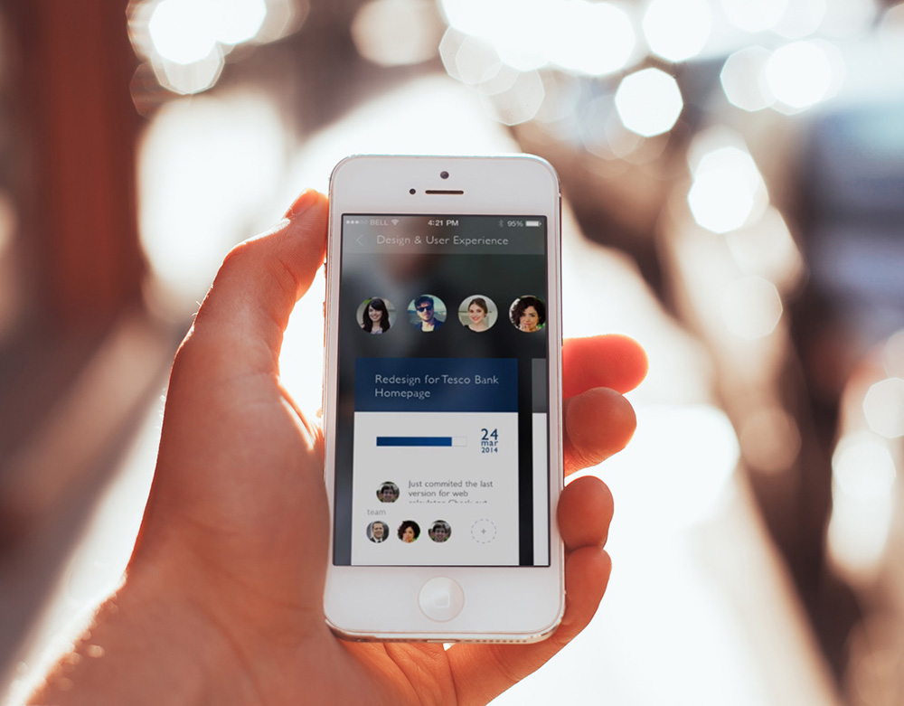
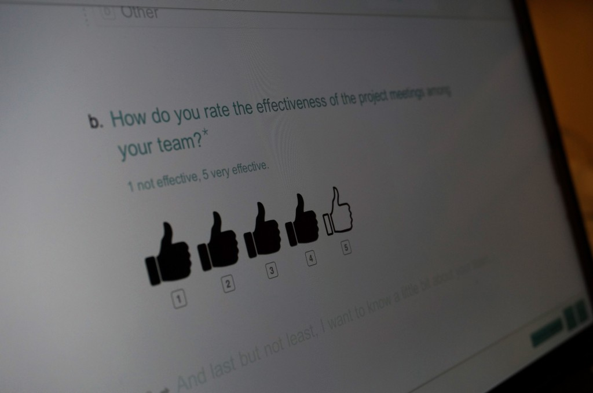
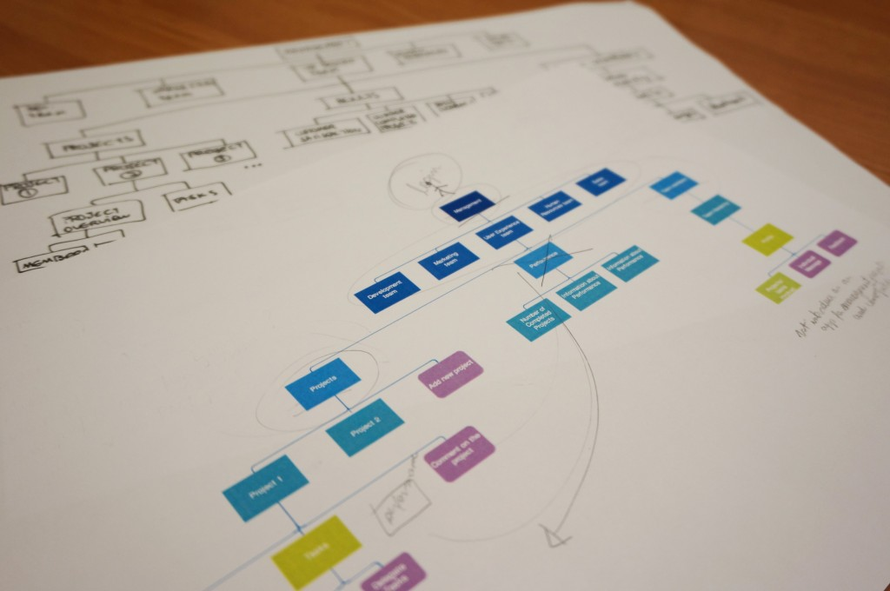
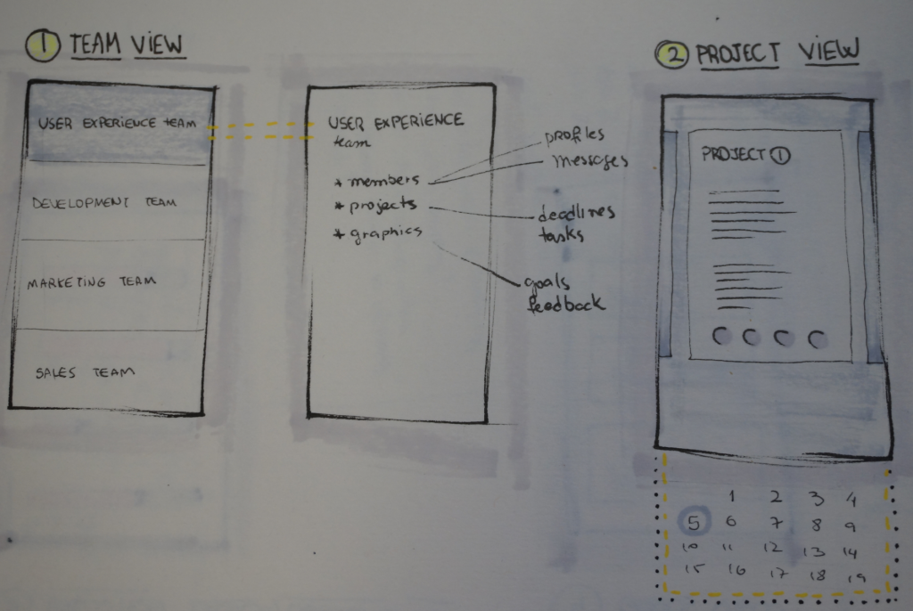
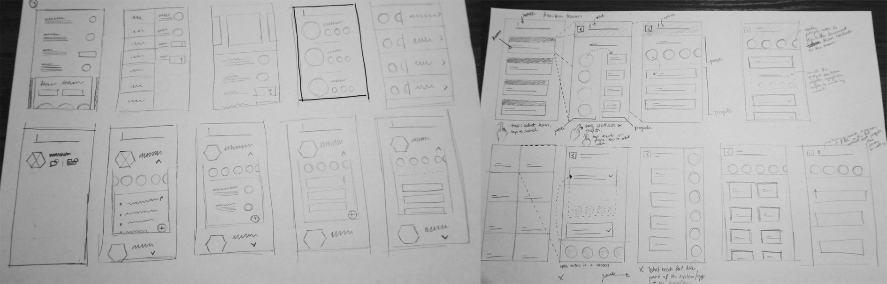
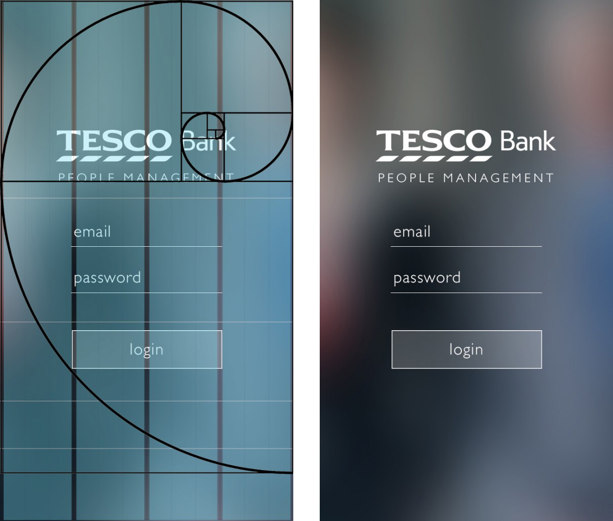
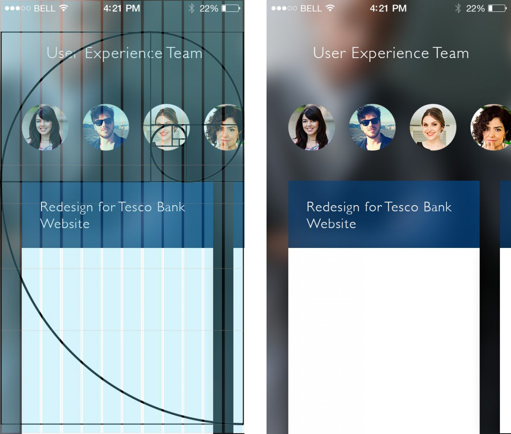

Tesco Bank People Management make possible to managers to get information and align their team members with the right projects in the company; giving them feedback about their performance. The aim of this app is to act as a curator, centralize & organise information, improving how managers understand the projects and team members.
The Research phase in this project started with an online survey. The questions I build were some multiple choice and others were some open questions, to exactly hear from the managers in the survey what could be the problem that they had. By the end of the survey, I got 9 responses (3 from United Kingdom and 6 from Brazil) and after analysing the data, I got some interesting informations as results:
One solution I found that could be interesting to understand how management work, would draw a flowchart. I begin to search on the internet, and then created the flowchart using Axure. It helped a lot, first because I understood the hierarchy in the management: directors > team managers; also because I could write some of the tasks that a manager need to do, which information is relevant to them etc.
After drawing and analysing the flowchart, I started to draw some sketches about how I would approach the project. The first two solutions that came into my mind, based on the flowchart and the research, was the 1. Team View (image below). With this approach, I would give more focus on the teams that a company have, so this would be the beginning.
Another solution was to start with the 2. Projects View. The first content that the manager would see in the future application would be the projects that are running in the company. I decided that this was a really important thing, but not the most important.
The third possible approach would be 3. Process/Deadline view, which was another important thing to consider in the application, but possibly not the first content for the application. And the last one was 4. Goals View, that would show the team goals in the company first, and then present projects and people involved with each goal.
After I analysed my options of approaching the application, I thought that the best one would be the 1. Team View. With the Team View, the managers would first select a team they work in the company, and after that they would check the projects, for instance.
This phase in the project was the very beginning of a concept for the application, and it was just possible based on the research and the flowchart, because of all the information that those techniques brought to the project.
Another important phase of this project was the sketches. This stage of the design process helped to create a lot of ideas, via brainstorm to achieve some solutions to solve the two main problems: feedback & follow up projects.
Managers want to stay updated about what is happening with their teams inside the company. Usually some meetings are organised to gather information about projects, or the manager delegate somebody else to get to know who is involved with a project, which is the deadline, or the metrics about a past project etc.
What if you have a mobile application that make possible to managers to see details of all projects that are running and the past ones; what if managers could align the team members with the right projects and give feedback to them?
This is the final concept of the application:
After the wireframing was concluded and I already had the right positioning for the elements in the interface, I could start designing the user interface. I used Photoshop to design the interfaces in the first moment, combined with some techniques as grids and golden rules. This was needed because I wanted to have an interface that did not show signs of clutter, and using specially grids to align the elements vertically and golden rule to align horizontally, you can get a very good solution for your interface in terms of decreasing clutter and complexity. I also followed some guidelines of the iOS 7, which is the environment I chose to work with.
One of the guidelines for iOS 7 is that you need to use techniques to represent depth in your interface. It depends on what the elements are and how they behave in your interface: for example, if you are working with animation, you need to pay attention in the guidelines for depth that indicates that when moving, the element is always in an effect called “parallax” to sinalize that there are different levels of elements (depth).
To achieve that in my interface, since I did not used live animations, I used blurred backgrounds, contrasting with sharp logo, sharp typefaces and buttons.
In this second screen below, the depth in the interface also helped to create a feeling that the objects are floating in the screen, that they are not attached to the background. And this would help the user to understand the interactions that he could perform in this interface.
The last stage of the project was define the content and build the prototype. The idea of the application for Tesco Bank management was not to have a new place to generate content. Mangers are already using tools to build reports, to generate metrics and I did not want to change it. The aim of this app is to work as a curator of information, centralize & organise, improving how managers understand the information about the projects and team members. This means all the content for this app would be hosted in the intranet, for instance. You as a manager have access to all informations about the projects that are running and also the past projects.
Tesco Bank People Management make possible to managers to get information and align their team members with the right projects in the company; giving them feedback about their performance. The aim of this app is to work as a curator of information, centralize & organise, improving how managers understand the information about the projects and team members.
As said before, my choice of tool for prototyping was Quartz Composer + Origami. As QC builds a file that only runs in its own environment, the solution is to use video to share the work. Here is a compilation with 4 videos for the interfaces I created in Quartz Composer as my final prototype (in order to better visualize the video, please click in the HD definition):
Do you want to hear more about it? Contact me: mariliaferreiraa@gmail.com